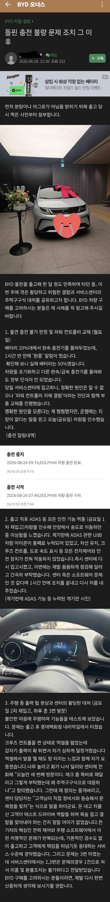

요악하면
-
충전불량 월요일 입고 금요일 수리완료
-
수리후 반자율주행기능 비활성화된 상태라재입고(소프트웨어 문제였는지 1시간만에 수리후 재출고)
-
재출고후 출력이상으로 다시 재입고. 하루에 3번입고
-
엔지니어는 동승하여 문제점 찾아보자 제안하였으나, 차주 는 “내가 테스트 드라이버? 왠 동승?” 하며 어이 없음
-
차량 한달 밖에 안됐으나, byd 측에서 환불은 불가하다 답변
센터에서는 그래도 동승까지해서
문제점 찾아 줄려고 노력하는거 같은데
저딴건 왜사는거냐